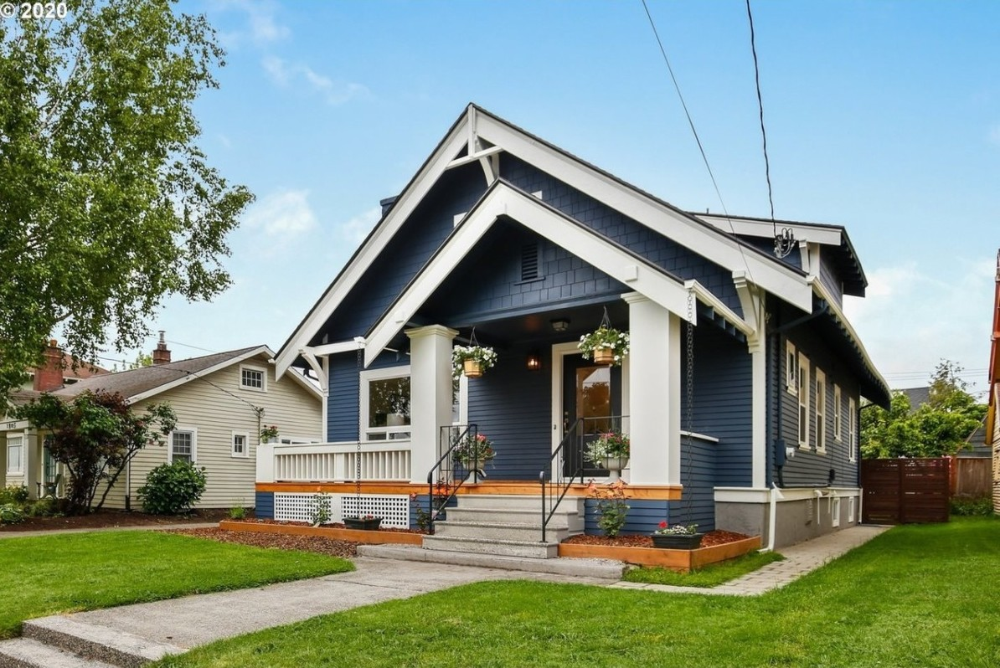

Craftsman Style Homes
Timeless Design, Built to Last
A home should be more than just a place to live, it should be a reflection of craftsmanship, attention to detail, and lasting beauty. Our Craftsman-style homes are designed to honor the legacy of this iconic American architectural style, blending practicality with artistic beauty.
What is a Craftsman Home?
Craftsman homes, first made popular in the early 20th century by architect Greene and Greene and popularized by the Arts & Crafts movement, emphasize handmade details, sturdy materials, and a strong connection between indoor and outdoor living.
- Exposed Rafters & Overhanging Eaves:
- The roofline is one of the most defining elements, often with large overhangs and exposed rafters that add architectural interest.
- Wide Porches with Heavy Columns:
- A welcoming feature, often with deep overhangs, these porches become extensions of the home’s living space.
- Natural Materials:
- Craftsman homes typically use wood, stone, and brick to blend harmoniously with the surrounding landscape.
- Built-in Furniture & Fixtures:
- Emphasizing function and simplicity, built-ins like bookshelves, benches, and cabinetry are standard features.
- Handcrafted Details:
- From custom woodwork to stained glass windows, no detail is overlooked in creating a home with character and individuality.
Characterized by:
Why Choose a Craftsman Home?
A Craftsman-style home is more than just beautiful—it’s designed for everyday living. Here are just a few reasons why homeowners are choosing Craftsman-style homes:
- Timeless Beauty:
- The unique craftsmanship and natural materials ensure that your home will always feel fresh and relevant, no matter how many years pass.
- Sustainable Design:
- With a focus on local materials and practical layouts, Craftsman homes are built to last while being energy-efficient and environmentally conscious.
- Open and Functional Spaces:
- A hallmark of Craftsman design is creating functional spaces that serve the needs of modern families while still offering a sense of warmth and comfort.
- Connection to Nature:
- Craftsman homes often incorporate elements like large windows, natural wood, and thoughtful landscaping to help you feel connected to the outdoors.